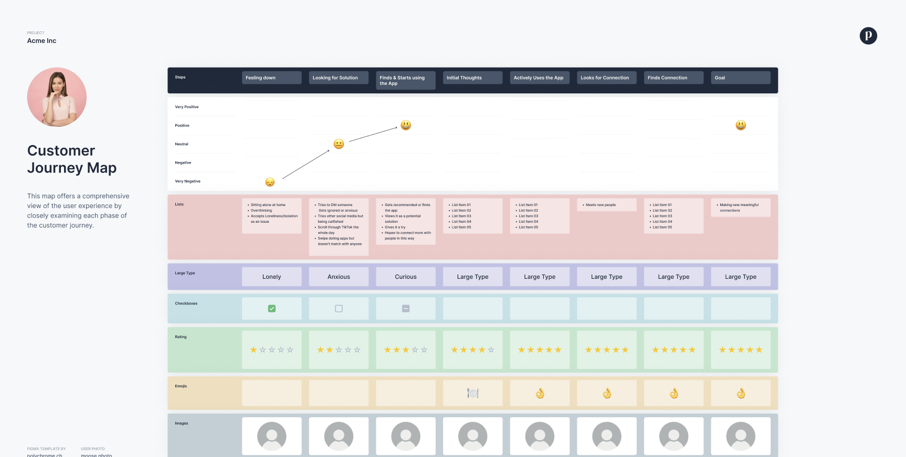
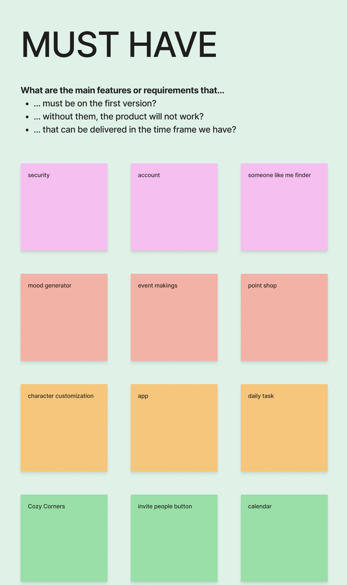

Brand Guide
The Brand Guide I started making it in a power point presentation so I can check all the boxes and share it in teams so all of us can edit, my part from the brand guide was the typography, core values and logo. Me and my team decided each of us to make a brand guide quickly and then decide which one is good so we can continue to enhance it together on one brand guide. Click to see the brand guide
Creating a brand guide is an essential step in building a consistent and recognizable identity. It serves as a clear reference that outlines how a brand should look, sound, and feel across different platforms and materials. By defining elements like logos, colors, fonts, and tone of voice, a brand guide ensures that everyone—from designers to marketers—represents the brand in a unified way.
Trello
I created a trello that helped us with the branding our company part so that we have a clear idea what we need to do and what is done. It helped us also by assigning roles and putting deadlines on each task. But we decided to continue with notion
Team Chart
The team charter is a document that showcases the group members, roles, norms and rules. We decided to have a couple of roles (team lead, contactperson, quality master and note taker) within the group to make sure these tasks will be done. Every group member also had to write down their strengths and weaknesses, which helped us eventually divide tasks within the project.
I made a file with the template for the team charter so we can all fill our own part, then this way it was easier to see and decide the roles for the projects
Lotus Brainstomring
We had a lecture about the lotus brainstorming and we kinda did that for the branding our company but now we decided to make it more serious and on paper. Using the Lotus Blossom brainstorming method really helped me and my group break down a broad idea into smaller, more manageable concepts. It provided a structured way to expand my thinking by starting with a central theme and branching out into related ideas
Empathy Map
Using an empathy map helped me better understand the users I’m designing for. By visually organizing what the user says, thinks, does, and feels, I was able to step into their shoes and uncover deeper insights beyond just basic needs. It encouraged me to think about their emotions, frustrations, and motivations, which ultimately influenced my design decisions in a more human-centered way.All the information from persona, empathy map are taken from the interviews see the whole design thinking process here
We had a feedback from our teacher that we did a lot of progress and we should keep going the only notice was the pov statement that me and my group need to update.
Persona
Using an empathy map helped me better understand the users I’m designing for. By visually organizing what the user says, thinks, does, and feels, I was able to step into their shoes and uncover deeper insights beyond just basic needs. It encouraged me to think about their emotions, frustrations, and motivations, which ultimately influenced my design decisions in a more human-centered way.All the information from persona, empathy map are taken from the interviews see the whole design thinking process here
We had a feedback from our teacher that we did a lot of progress and we should keep going the only notice was the pov statement that me and my group need to update.
Customer Journey
Our teacher told me and my group that we should make a customer journey even if its not finished and that is a good idea to start thats why me and my teammates did it together and filled the first 3 columns
We had a feedback from our teacher that we did a lot of progress and we should keep going the only notice was the pov statement that me and my group need to update.
HMW questions
These HMW questions helped me turn what users are struggling with into ideas I can actually design for. They let me explore different ways to make the app fun, creative, and supportive, especially for young people who feel lonely or awkward socially. They helped me later with brainstorming because basically I was brainstorming solutions and answers for those questions. The questions I and my group asked are based on interviews, surveys and research we did before that.
POV
Our teacher told me and my group that we should make a customer journey even if its not finished and that is a good idea to start thats why me and my teammates did it together and filled the first 3 columns
We had a feedback from our teacher that we did a lot of progress and we should keep going the only notice was the pov statement that me and my group need to update.
Moscow Table
Our teacher told me and my group that we should make a customer journey even if its not finished and that is a good idea to start thats why me and my teammates did it together and filled the first 3 columns
We had a feedback from our teacher that we did a lot of progress and we should keep going the only notice was the pov statement that me and my group need to update.
Notion
Our teacher told me and my group that we should make a customer journey even if its not finished and that is a good idea to start thats why me and my teammates did it together and filled the first 3 columns
We had a feedback from our teacher that we did a lot of progress and we should keep going the only notice was the pov statement that me and my group need to update.
Ui sheet
Lizzy decided to make a ui sheet because not everyone groum the group had the same design for their pages so we wanted everything to be consistent and thats why she made it. We got different colour palletes and later on I tested them so we can choose one for the ui sheet.

To figure out which one worked best, I tested them with a few people just to get their reactions. Most of them said that the fifth one really stood out the most — they described it as more energetic and friendly, which is the kind of vibe we wanted for the app.

Once we chose that palette, we moved on to creating the UI sheet. That’s where we started putting together all the design elements like fonts, sizes, button styles, and things like that. Having this UI sheet is helping us a lot, because it keeps everything consistent throughout the app. So, no matter what screen we’re working on, we can make sure the design feels the same — same colors, same style, same tone. It’s made the whole process feel more organized and professional, and it's easier to prototype now because we’re not making design decisions from scratch each time.

User flow
So, this is the user flow me and Lizzy worked on, and it really helped us structure our idea better. Basically, a user flow shows all the steps a person would take when using the app — from the moment they open it to the different actions they might take, like signing up, choosing hobbies, or joining events.
Me and Lizzy used different colors to categorize each page.The reason we made a user flow before jumping into prototyping is because it gives us a clear picture of the entire experience. We get to see how everything connects, what screens we need, where users might get stuck, and even where errors might happen — like we showed with the school email error.
It also helped us think logically about the features. For example, when we added the event section, we realized it wasn’t just “make an event” — users also need to add a location, pictures, and maybe even set a max number of people. All of that came from mapping it out in the flow first.
So overall, it’s a helpful step for organizing our ideas and making sure the app is usable before we spend time designing or coding anything